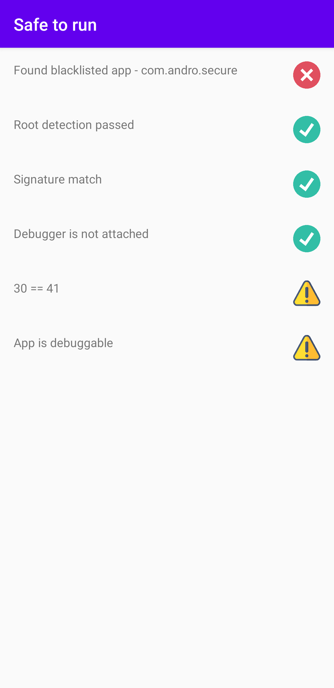

Safe to run
Secure your mobile apps
Easy to Use
Android security is hard, safe to run is a simple to use tool to help protect your app from hackers.
Check it's safe
The premise of safe to run is a simple question - is it safe to run my app or function. With everything from root detection, to blacklisted apps and signature verification - safe to run gives you confidence
Robust recompilation protection
Safe to run provides an interface to protect against attackers modifying and recompiling your binary
Gallery
